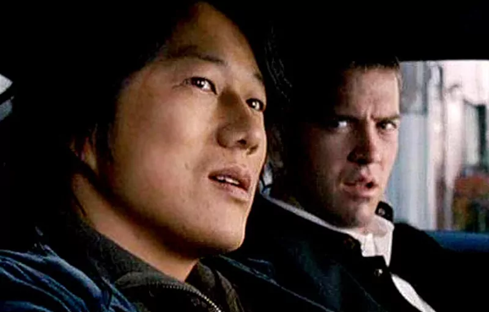
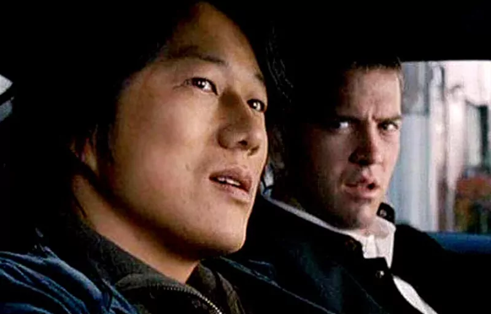

Sean Boswell é um piloto de rua que desafia seu rival e bate o carro no fim da corrida. Ele decide se mudar para o Japão para evitar a prisão nos Estados Unidos, já que os rachas não são nada populares com as autoridades.
Em Tóquio, ele começa a aprender um excitante e perigoso estilo novo de competir nas ruas. Só que os riscos ficam ainda mais altos quando Sean decide rivalizar com o campeão local e acaba se apaixonando pela namorada dele.
Na trama, Sean arruma encrenca com seus colegas de colégio ao participar de uma corrida e é enviado para Tóquio, para morar com seu pai. Chegando lá, se interessa por Neela (Nathalie Kelley), uma garota que, pasmem, é fanática por velocidade e está envolvida com corridas clandestinas.
Ela é namorada de Takashi (Brian Tee), conhecido por todos como Drift King, um grande corredor de uma modalidade diferente de rachas, no qual o importante é saber fazer curvas fechadas – chamadas de drifts. De sangue quente, Sean desafia Takashi para um “duelo” e acaba destruindo o carro que havia pego emprestado de Han (Sung Kang). Curiosamente, em vez de ficar furioso com Sean, Han toma o rapaz como um pupilo, o ensinando a arte do drift.
Han é, sem sombra de dúvidas, o personagem mais interessante de Velozes e Furiosos: Desafio em Tóquio. Aliás, é possível ir além e afirmar que é o mais interessante de toda a franquia. E isso só é possível pela atuação cativante e completamente calma de Sung Kang. Sempre mastigando alguma coisa, nunca mudando seu cenho plácido, Han é uma figura que prima pelas boas companhias e observa em Sean um sujeito correto, com quem poderia começar uma amizade. Certamente, o roteirista Chris Morgan não esperava um ator tão convincente no papel, senão não criaria um desfecho definitivo para um dos destaques do filme. Isso é tão verdade que o ator foi chamado de volta em capítulos posteriores, deixando claro que os acontecimentos destas continuações eram ambientadas antes da trama de Desafio em Tóquio.
 
acesse aqui

acesse aqui